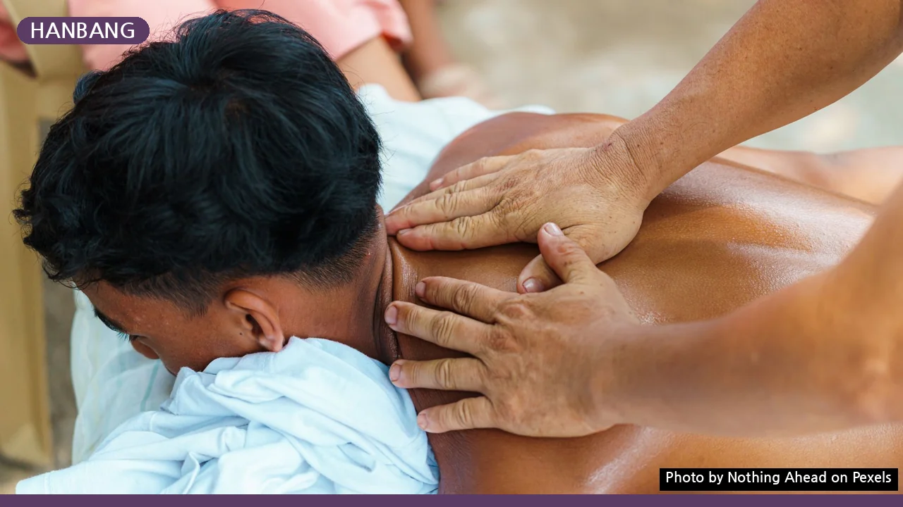
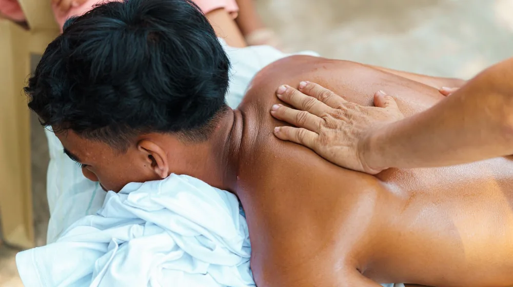
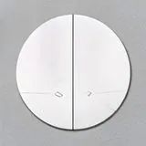

한방 스파 vs 일반 스파 완벽 비교: 내 몸엔 어떤 쪽이 맞을까?
사진: Nothing Ahead / Pexels (무료 이미지, 출처 표기)
몸과 마음에 쌓인 피로를 풀기 위해 스파(Spa)를 찾다 보면 '한방 스파'라는 독특한 선택지를 마주하게 됩니다. 일반적인 아로마 스파와 무엇이 다르고, 내 몸에는 어떤 케어가 더 잘 맞을지 고민하시는 분들이 많습니다. 단순히 향기로운 오일을 바르는 것을 넘어, 동양 의학의 지혜를 담은 한방 스파와 서구식 릴랙스 중심의 일반 스파가 가진 실질적인 차이점을 명확하게 비교해 드립니다.
한방 스파와 일반 스파, 핵심 차이는 무엇일까?

두 스파의 가장 큰 차이는 몸을 바라보는 관점과 사용하는 재료에 있습니다. 일반 스파는 주로 스웨디시(Swedish massage, 가벼운 압으로 근육과 림프를 자극하는 서양식 마사지)나 아로마테라피를 기반으로 합니다. 근육의 긴장을 완화하고 신경계를 안정시켜 즉각적인 스트레스 해소와 휴식을 주는 것이 목적입니다.
반면 한방 스파는 한의학의 음양오행 원리를 접목합니다. 몸의 기혈(氣血, 에너지와 혈액의 순환) 흐름을 원활하게 만드는 경락(經絡, 인체의 기 에너지가 흐르는 통로) 마사지가 중심이 됩니다. 단순히 피부 표면이나 겉근육만 만지는 것이 아니라, 내부 장기의 균형을 맞추는 데 초점을 둡니다.
한방 스파 vs 일반 스파 한눈에 비교하기
선택을 돕기 위해 두 스파의 핵심 요소를 비교표로 정리했습니다. 본인의 현재 건강 상태와 관리 목적에 맞춰 비교해 보세요.
내 몸에 맞는 스파 선택법: 체질과 컨디션 기준
손발이 차갑고 소화가 자주 안 되며 만성 피로에 시달린다면 한방 스파가 훌륭한 대안이 될 수 있습니다. 따뜻한 성질의 한방 약재와 온열 요법이 몸의 냉기를 몰아내고 기초 체온을 올리는 데 도움을 주기 때문입니다. 한국관광공사의 웰니스 관광 가이드에서도 한방 스파는 면역력 증진과 기력 회복을 위한 대표적인 코스로 추천되고 있습니다.
반면 극심한 정신적 스트레스로 머리가 무겁거나, 부드러운 터치로 오감을 깨우는 힐링을 원한다면 일반 아로마 스파가 더 적합합니다. 은은한 천연 아로마 향은 대뇌의 후각 피질을 자극해 부교감 신경을 활성화하고 불면증을 완화하는 데 탁월한 효과를 보입니다.
스파를 받기 전 반드시 확인해야 할 주의사항
안전하고 효과적인 관리를 위해 몇 가지 주의할 점이 있습니다. 우선 한방 약재나 특정 에센셜 오일에 알레르기 반응이 있는지 미리 확인해야 합니다. 한방 스파의 경우 인삼이나 홍삼 성분이 함유된 제품을 많이 사용하므로, 평소 인삼류에 민감하거나 열이 많은 체질이라면 사전 상담 시 반드시 테라피스트에게 알려야 합니다.
또한, 임산부의 경우 임신 주수에 따라 피해야 할 혈자리와 에센셜 오일 종류(예: 자궁 수축을 유발할 수 있는 자스민, 로즈마리 등)가 있으므로 전문 임산부 코스가 있는 곳을 선택하는 것이 안전합니다. 식사 직후나 음주 후에는 혈액 순환이 급격히 빨라져 어지러움증을 유발할 수 있으므로 최소 1시간 이상의 공백을 두는 것을 권장합니다.
전문가가 제안하는 스파 효과 극대화 팁
스파를 받기 10~15분 전에 따뜻한 차를 마시면 몸의 순환이 미리 촉진되어 마사지 효과가 배가됩니다. 관리가 끝난 후에는 몸에 흡수된 좋은 오일 성분이 피부에 머무를 수 있도록 최소 2~3시간 동안은 가벼운 물 샤워만 하거나 샤워를 피하는 것이 좋습니다. 독소 배출을 돕기 위해 관리 당일에는 수분을 충분히 섭취해 주는 것도 잊지 마세요.
본 정보는 2026년 2월 기준으로 작성되었으며, 개별 스파 프로그램의 세부 구성과 운영 방식은 업체마다 다를 수 있으므로 방문 전에 공식 채널을 통해 정확한 정보를 재확인하시기 바랍니다.
🔗 이 글도 함께 보면 좋아요: DSR DTI LTV 완벽 비교: 내 대출 한도 결정하는 3대 규제
관련 추천 상품
이 포스팅은 쿠팡 파트너스 활동의 일환으로, 이에 따른 일정액의 수수료를 제공받습니다.
자주 묻는 질문(FAQ) (탭하면 펼쳐져요)
Q1. 한방 스파는 일반 마사지와 무엇이 다른가요?
A. 한방 스파는 동양 의학의 기혈 순환과 경락 이론을 바탕으로 하며, 인삼, 당귀 등 전통 약재 성분의 오일을 활용해 몸의 속부터 균형을 맞춥니다. 반면 일반 스파는 근육 이완과 림프 순환을 통한 릴랙싱에 집중합니다.
Q2. 임산부도 한방 스파를 받을 수 있나요?
A. 임신 중에는 자극해서는 안 되는 혈자리가 있고, 일부 한방 약재나 아로마 오일은 자궁 수축을 유발할 수 있습니다. 반드시 임산부 전용 프로그램을 갖춘 스파 전문점에서 사전 상담 후 진행해야 안전합니다.
Q3. 스파를 받고 나서 바로 샤워를 해도 되나요?
A. 스파에 사용된 고급 약재 성분이나 에센셜 오일이 피부에 충분히 흡수될 수 있도록, 스파 직후에는 가벼운 물 샤워만 하거나 2~3시간 정도는 샤워를 하지 않는 것이 좋습니다.
한눈에 보는 상품 목록

설화수 자음생 바디 에센스
귀한 인삼 성분이 메마른 바디 피부에 탄력과 깊은 영양을 공급하는 프리미엄 바디 케어 제품
아로마티카 라벤더 바디 오일
집에서도 전문 스파에 온 듯한 편안한 휴식을 선사하는 고농축 천연 에센셜 바디 오일